UD. 3 - LibreOffice Calc

Resultados de aprendizaje y criterios de evaluacion que se evaluarán en esta unidad.
| Resultados de aprendizaje de la unidad didáctica: |
|---|
| RA3. Elabora documentos y plantillas de cálculo, describiendo y aplicando opciones avanzadas de hojas de cálculo. |
| Criterios de evaluación de la unidad didáctica: | |
|---|---|
| a) Se ha personalizado las opciones de software y barra de herramientas. | 5% |
| b) Se han utilizado los diversos tipos de datos y referencia para celdas, rangos, hojas y libros. | 15% |
| c) Se han aplicado fórmulas y funciones. | 30% |
| d) Se han generado y modificado gráficos de diferentes tipos. | 10% |
| e) Se han empleado macros para la realización de documentos y plantillas. | 5% |
| f) Se han importado y exportado hojas de cálculo creadas con otras aplicaciones y en otros formatos. | 5% |
| g) Se ha utilizado la hoja de cálculo como base de datos: formularios, creación de listas, filtrado, protección y ordenación de datos. | 25% |
| h) Se han utilizado aplicaciones y periféricos para introducir textos, números, códigos e imágenes. | 5% |
Nota:
El criterio de evaluación f) Se han importado y exportado hojas de cálculo creadas con otras aplicaciones y en otros formatos será evaluado durante la FCT.
1 - Interfaz de trabajo en Calc
Después de hacer doble clic sobre el icono de LibreOffice seleccionamos Nuevo → Hoja de cálculo y nos encontraremos con la siguiente interfaz.
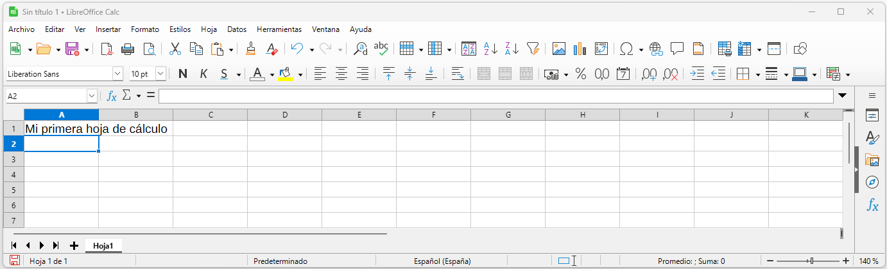
Pregunta
¿Qué es lo primero que debemos hacer cuando creamos un nuevo documento?
1.1 - Menú: Archivo
Permite la creación de un archivo de hoja de cálculo y su posterior guardado, firmado digital o impresión, etc.
Idéntico al de LibreOffice writer.
1.2 - Menú: Editar
Aparte del conocido “copiar pegar” también permite buscar, editar celdas...
Muy parecido al de LibreOffice writer.
1.3 - Menú: Ver
El menú "Ver" sirve para controlar cómo se muestra el documento en pantalla y qué elementos visuales de la interfaz deseamos ver u ocultar.
No modifica el contenido del documento, solo la forma en que se visualiza mientras trabajamos.
Muy parecido al de LibreOffice writer.
1.4 - Menú: Insertar
Ofrece opciones para incluir objetos en nuestro documento: fotografías, dibujos, tablas, ecuaciones matemáticas o incluso otros archivos.
Muy parecido al de LibreOffice writer.
1.5 - Menú: Formato
Es, la ventana que más se utilizará ya que, permite dar formato y propiedades a las celdas de nuestras hojas de cálculo.
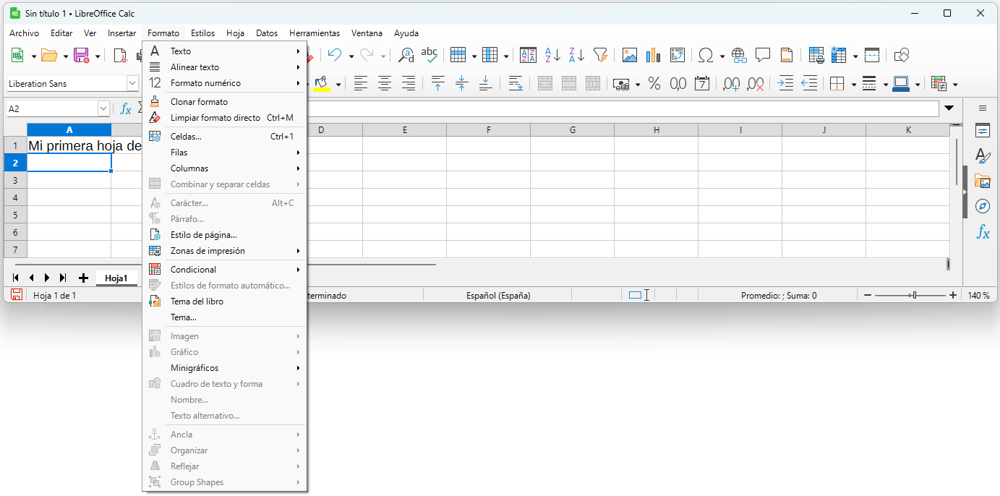
1.6 - Menú: Estilos
Casi tan importante como el menú formato, es sin duda el gran olvidado de la mayoría de usuarios.
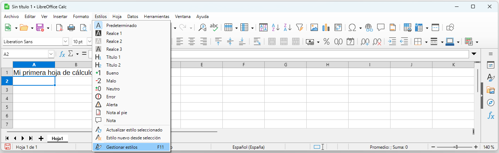
1.7 - Menú: Hoja
Contiene todo lo relacionado con la gestión de las filas y columnas de las hojas de cálculo así como la gestión de las propias hojas.
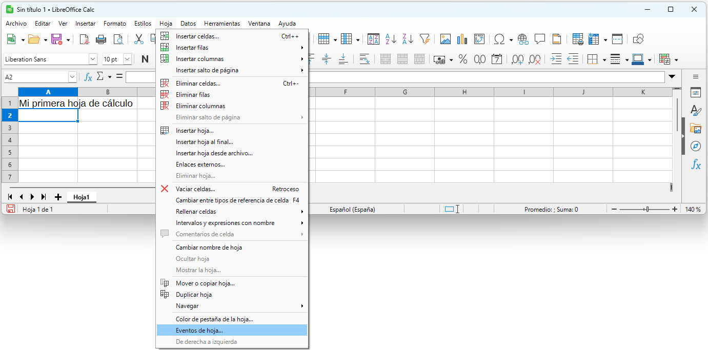
1.8 - Menú: Datos
Sirve para para gestionar, manipular y analizar la información de las hojas de cálculo.
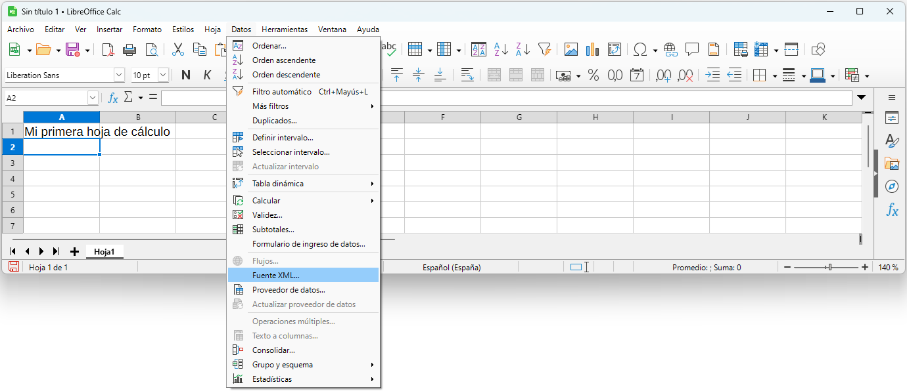
1.9 - Menú: Herramientas
Es el menú de la mayoría de herramientas de validación de un documento: En ese menú se encuentran las funciones de ortografía, autocorrección, macros, configuración de idioma, complementos, etc.
Muy parecido al de LibreOffice writer.
1.10 - Menú: Ventana
El menú "Ventana" está pensado para gestionar las distintas ventanas o instancias del programa abiertas en ese momento.
No afecta al contenido del documento, sino a cómo se interactúa con varios documentos o vistas al mismo tiempo.
Idéntico al de LibreOffice writer.
1.11 - Menú: Ayuda
Reúne todas las opciones para obtener asistencia, acceder a la documentación oficial y consultar información sobre la instalación de LibreOffice
Idéntico al de LibreOffice writer.
Tarea RA3-CEa - Personalización de la interfaz de usuario
Tarea RA3-CEa - Configuración del software utilizado
- Crear un documento y guardarlo con el nombre Tarea-RA3CEa-NombreApellidosDelAlumno.ods.
- Cambiar el tipo de letra básico de Liberation Sans a Arial.
- Cambiar el idioma del documento a español
- Configurar la hoja de cálculo para que realice una copia de resplado cada 5 minutos.
- En Opciones → LibreOffice → Datos de identidad → Introducir vuestros nombres apellidos e iniciales.
- Modificar la interfaz de usuario para que, aparte de los menús que salen por defecto, también se vean:
- Insertar celda.
- Controles de formulario.
- Navegación de formulario.
- Condiciones de entrega de la práctica: Subir el archivo en formato ods, nativo de LibreOffice a la tarea RA3-CEa. No se admitirá ningún otro tipo de formato.
Tarea RA3-CEb-1 - Elaboración básica de hojas de cálculo
Tarea RA3-CEb-1 - Elaboración de una tabla en un hoja de cálculo
Ejercicio parte 1
Creación de estilos
Crear los estilos Valores, Columnas, Indices según se vea a continuación.
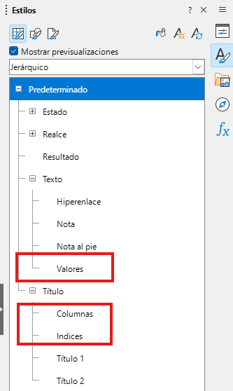
Configuración de los estilos
1. Predeterminado:
Tipo de letra: Arial 12 normal, alineación izquierda.
2. Estilo Valores
Tipo de letra: Arial 12 normal Añil oscuro, centrado horizontalmente.
Bordes: Grosor 0.5pt, Añil oscuro 2.
Fondo: Gris claro 5.
3. Estilo Columnas
Tipo de letra: Arial 12 cursiva verde, centrado horizontalmente.
Bordes: Grosor 0.05pt, oro.
Fondo: Oro claro 4.
4. Estilo Índices
Tipo de letra: Arial 12 cursiva, azul oscuro 1, alineación izquierda.
Bordes: Grosor 0.5pt, oro claro 1.
Fondo: Rojo claro 4.
3. Estilo Título 1
Tipo de letra: Arial 16 negrita blanco, centrado horizontalmente y verticalmente.
Fondo: Negro.
4. Estilo Título 2
Tipo de letra: Arial 12 negrita, rojo, centrado horizontalmente.
Bordes: Grosor 0.5pt, lima.
Fondo: Magenta claro 4.
Tamaño de celdas
Anchura columna 1: 2cm
Anchura columnas 2, 3, 4 y 5,: 3cm
Altura fila 1: 1cm
Altura fila 2: 0.75cm
Altura fila 3: 0.6cm
Altura fila 4, 5, 6, 7, y 8: 0.5cm
Datos a introducir dentro de las celdas
Introducir los datos a mano para que quede de la siguiente manera.
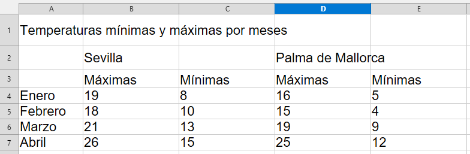
Trabajo adicional
Aplicar los estilos de la siguiente manera.
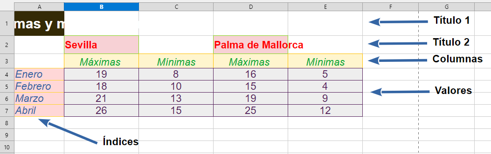
Trabajo adicional
Combinar las celdas A1, B1, C1, D1 y E1
Combinar las celdas B3 con C3 y D3 con E3
Insertar una fila en la posición 1 y una columna en la posición A.
Redimensionar la columna A al gusto.
El resultado final deberá ser similar al de la imagen.
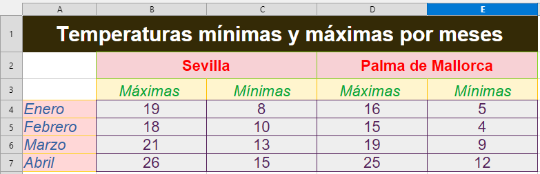
Ejercicio parte 2
Dentro del mismo documento crear una hoja nueva.
Renombrar las hojas a:
Hoja 1 → Ejercicio 1
Hoja 2 → Ejercicio 2
En la hoja 2, copiar y pegar todos los datos de la hoja 1.
En la hoja 2, ampliar las filas de los meses y modificar los datos hasta completar todos los meses del año.
Trabajo adicional
Arreglar el ancho de la columna de los meses para que el texto no quede cortado.
Para evitar que los datos se repitan, poner la formula =ALEATORIO.ENTRE(-10;35) como valor de las celdas de las temperaturas.
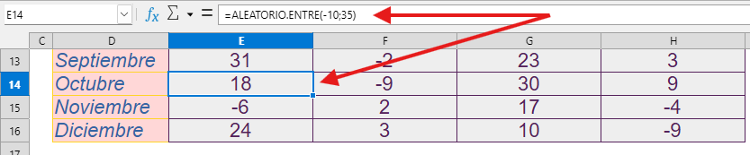
Al final la tabla quedará de la siguiente manera.
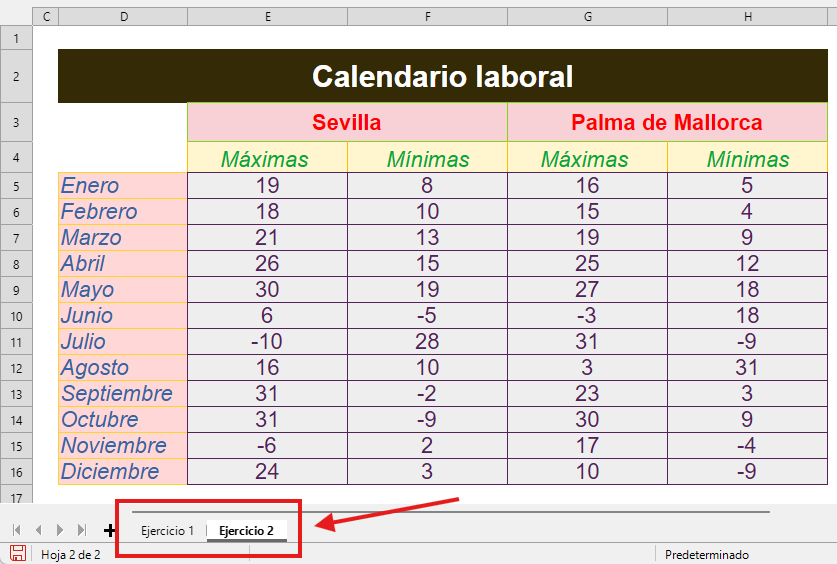
Condiciones de entrega
Guardar el documento con NombreApellidos-Tarea-RA3-CEb-1
Subir la hoja de cálculo en formato ods, nativo de LibreOffice a la tarea RA3-CEb-1
No se aceptará ningun formato que no sea ods.
Tarea RA3-CEb-2 - Elaboración básica de hojas de cálculo
Tarea RA3-CEb-2 - Trabajando con series
Ejercicio parte 1
Realizar un diseño similar al del ejemplo.
Teneis libertad total en cuanto a anchos, altos, bordes, colores y ancho del bordes columnas así como tamaño color tipo de letra y fondo de celdas.
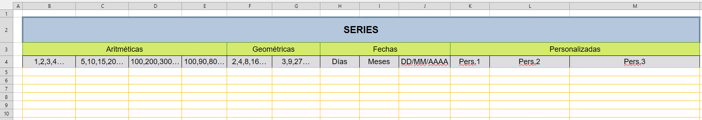
Ejercicio parte 2
Insertar series para obtener el mismo resultado que a continuación.
Se dará la explicación en clase de como hacer series.
Series aritméticas
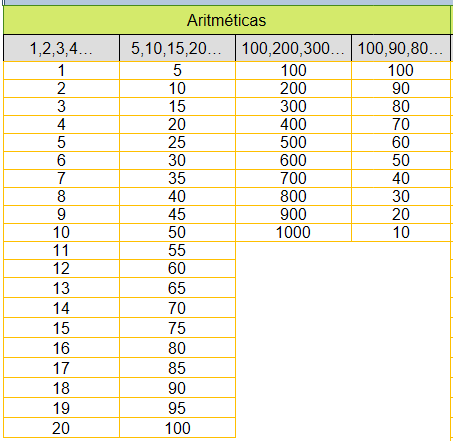
Series geométricas
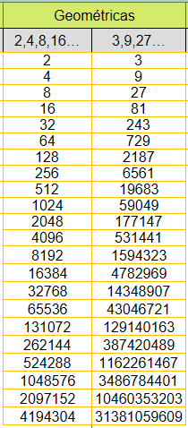
Fechas
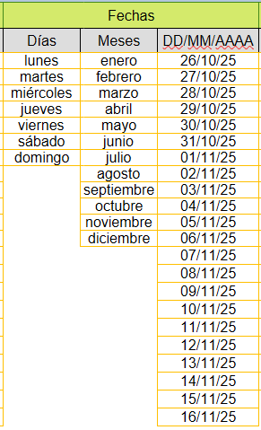
Personalizadas
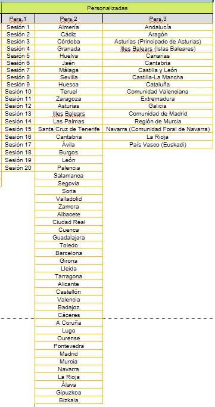
Resultado final
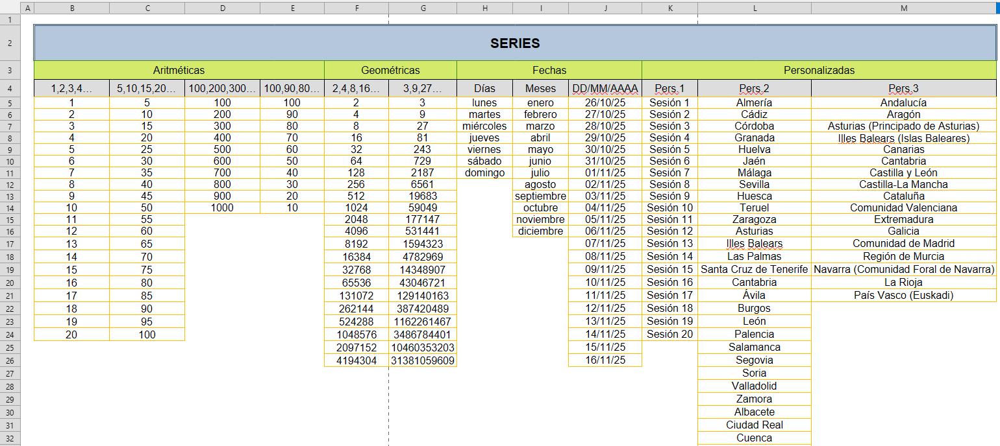
Trabajo adicional
Inmobilizar la columna adecuada y actuar sobre la barra de desplazamiento para obtener el siguiente resultado.
No debeis copiar / pegar las columnas.
Resultado esperado.
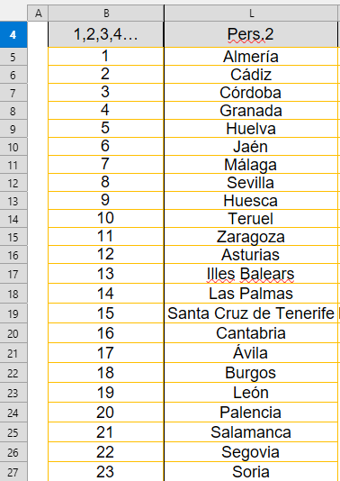
Condiciones de entrega
Guardar el documento con NombreApellidos-Tarea-RA3-CEb-2
Subir la hoja de cálculo en formato ods, nativo de LibreOffice a la tarea RA3-CEb-2
No se aceptará ningun formato que no sea ods.
Tarea RA3-CEc-1 - Datos, columnas y referencias de celdas
Tarea RA3-CEc-1 - Trabajando con formatos celdas
1. Descargar el archivo
Descargar y abrir el archivo 'RA3-CEc-1' pinchando en el enlace siguiente: Descargar archivo
2. Realizar un diseño similar al del ejemplo
Teneis libertad total en cuanto a anchos, altos, bordes, colores y ancho del bordes columnas así como tamaño color tipo de letra y fondo de celdas.
Nota importante: Cosas a tener en cuenta para realizar el diseño.
Fila 1: Datos centrados tanto verticalmente como horizontalmente.
Bordes personalizados.
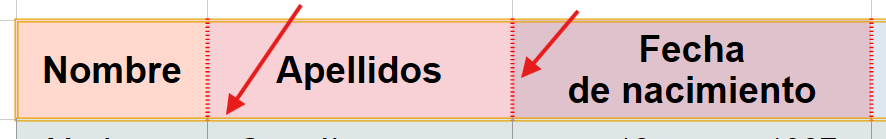
Filas datos: Sangrías (o márgenes) a la izquierda o a la derecha.
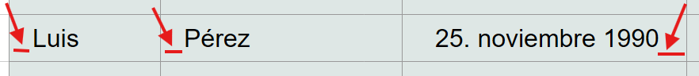
Formato de datos: Fechas, moneda, hora...
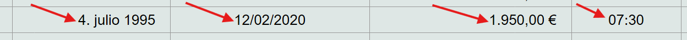
Resultado final.
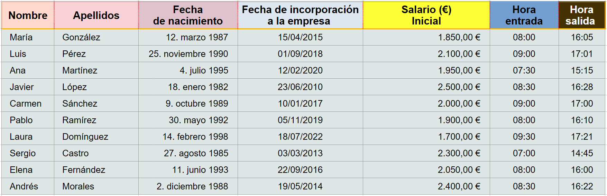
3. Insertar una columna de segundo apellido
Insertar una columna de segundo apellido para que quede de la siguiente manera (ojo con la cabecera de la columna).
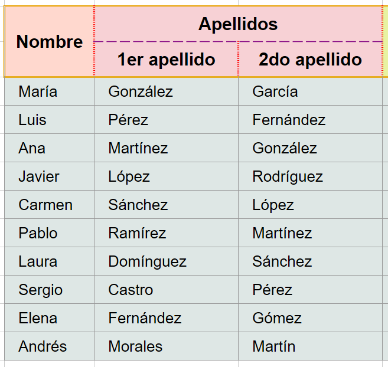
Apellidos a añadir:
García
Fernández
González
Rodríguez
López
Martínez
Sánchez
Pérez
Gómez
Martín
4. Insertar una columna Salario actual
Insertar una columna Salario actual con los datos que aparecen en la imagen.
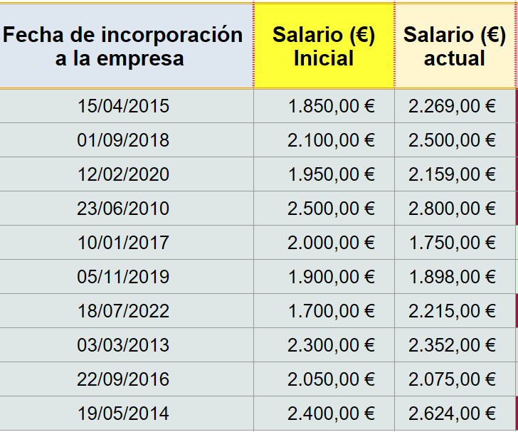
Datos a introducir:
2269
2500
2159
2800
1750
1898
2215
2352
2075
2624
5. Insertar la columna "Diferencia actual-inicial"
Insertar la columna Diferencia actual-inicial que será la diferencia entre las 2 columnas anteriores.
Os dejo la fórmula para calcular esa diferencia.
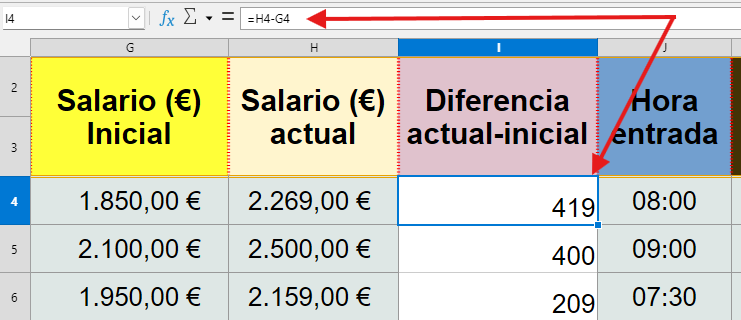
6. Aplicar un formato condicional a la columna "Diferencia actual-inicial"
Para diferencias superiores a 200 se aplicará el estilo Alerta (o cualquier otro, incluso podreís crear uno).
Para diferencias entre 0 y 200 se aplicará el estilo Neutro (...).
Para diferencias inferiores a 0 se aplicará el estilo Bueno (...).
Resultado final (cuidado con los estilos propios de los datos).
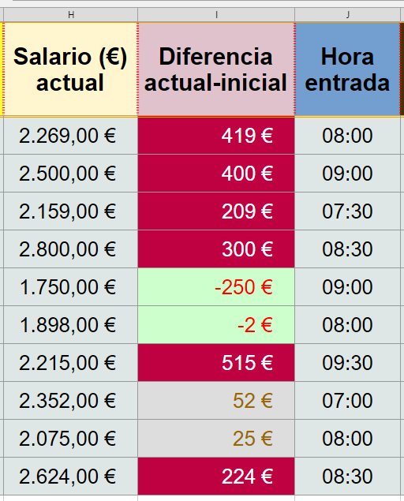
7. Insertar una columna "Horas trabajadas diarias"
Insertar una columna Horas trabajadas diarias cuyos valores seran la diferencia entre las columnas Hora salida y Hora entrada.
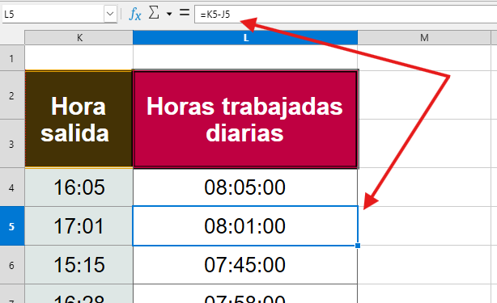
8. Aplicar un formato condicional a la columna "Horas trabajadas diarias"
Para valores superiores a 8 horas 200 se aplicará el estilo Bueno (o cualquier otro, incluso podreís crear uno).
Para valores iguales a 8 horas se aplicará el estilo Neutro (...).
Para valores inferiores a 8 horas se aplicará el estilo Alerta (...).
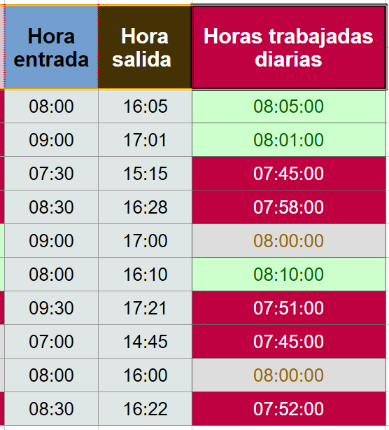
9. Aspecto final de la práctica"
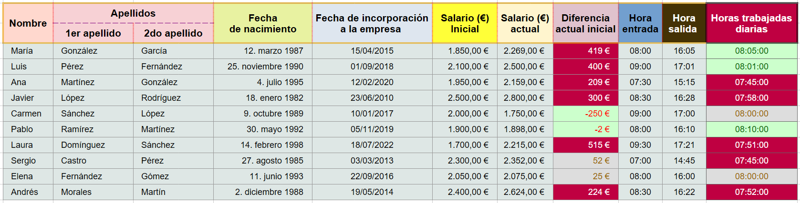
Tarea RA3-CEc-2 - Formúlas básicas, referencias de celdas, relativas, absolutas y mixtas
Tarea RA3-CEc-2 - Trabajando con celdas
Un poco de teoría sobre referencias y rangos de celdas.
Todas las celdas de una hoja de cálculo tienen referencias (coordenadas). Por convención, las columnas se identifican por letras y las filas por números.
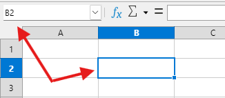
Un rango de celdas es un conjunto de celdas adyacentes. Para hacer referencia a un rango de celdas, introduciremos la referencia de la celda en la esquina superior izquierda, seguida de dos puntos (:) y, a continuación, la referencia a la celda en la esquina inferior derecha del rango.
Ejemplo de rangos.
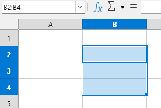
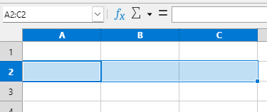
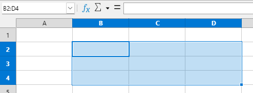
Tarea parte 1. Descargar el archivo
Descargar y abrir el archivo 'RA3-CEc-2' pinchando en el enlace siguiente: Descargar archivo
Tarea parte 2. Aplicar fórmulas básicas a las celdas
En la hoja 1 encontrareís unas tablas con valores.
Trabajos a realizar:
- Conjunto de la hoja de cálculo: Dar formatos, anchos altos de columnas, colores, fondos, bordes a las tablas para que el documento sea legible. Tenéis libertad total en este apartado.
- Columna Prima: Asignar a mano la prima del empleado haciendo uso de la tabla. (Esta operación se puede automatizar, como lo veremos en otra tarea).
- Columna Sueldo + prima: Calcular el resultado de la suma de las columnas Prima y Sueldo.
- Columna Porcentaje sobre el sueldo: Calcular el porcentaje que representa la prima sobre el sueldo (sin prima) para cada empleado.
- Celdas Suma primas y Suma Sueldos + primas: Justo debajo de esas celdas poner el resultado de la suma de los valores de la columna Prima y de la columna Sueldos + primas.
Un poco de teoría sobre referencias relativas, absolutas y mixtas.
Referencias relativas
Las referencias relativas se basan en la posición relativa de la celda que contiene la fórmula y de la celda a la que hace referencia. Si se copia una fórmula en filas o columnas, la referencia se ajusta automáticamente es decir:
- Si cambia la posición de la celda que contiene la fórmula, se cambia la referencia.
- Si se copia la fórmula en filas o columnas, la referencia se ajusta automáticamente.
Nota: De forma predeterminada todos los editores de hojas de cálculo utilizan referencias relativas.
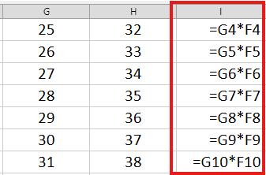
Tarea parte 3. Aplicar una fórmula usando referencias relativas.
Ir a la hoja 2 del documento RA3-CEc-2
- Dar formatos, anchos altos de columnas, colores, fondos, bordes a las tablas para que el documento sea legible. Tenéis libertad total en este apartado.
- Completar la tabla de multiplicar por 5.
Un poco de teoría sobre referencias relativas, absolutas y mixtas.
Referencias absolutas
Una referencia absoluta hace referencia a una celda en una ubicación específica. Se caracteriza por incluir el carácter $.
Si cambia la posición de la celda que contiene la fórmula, la referencia absoluta permanecerá invariable. A diferencia de las referencias relativas, si se copia / pega la fórmula en filas o columnas, la referencia absoluta no se ajustará.
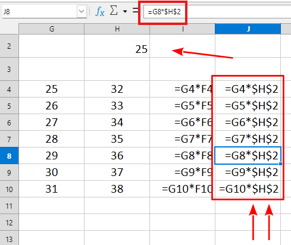
Tarea parte 4. Aplicar una fórmula usando referencias absolutas.
Ir a la hoja 3 del documento RA3-CEc-2
- Dar formatos, anchos altos de columnas, colores, fondos, bordes a las tablas para que el documento sea legible. Tenéis libertad total en este apartado.
- Completar la columna Préstamo en Euros usando referencias absolutas.
Un poco de teoría sobre referencias relativas, absolutas y mixtas.
Referencias mixtas
Una referencia mixta se compone de una columna (fila) absoluta y una fila (columna) relativa.
Una referencia de columna absoluta adopta la forma $A1, $B1, etc y una referencia de fila absoluta la forma A$1, B$1, etc.
Si cambia la posición de la celda que contiene la fórmula, se cambia la referencia relativa y la referencia absoluta permanece invariable. Si se copia y pega la fórmula en filas o columnas, la referencia relativa se ajusta automáticamente y la referencia absoluta no se ajusta.
Ejemplo
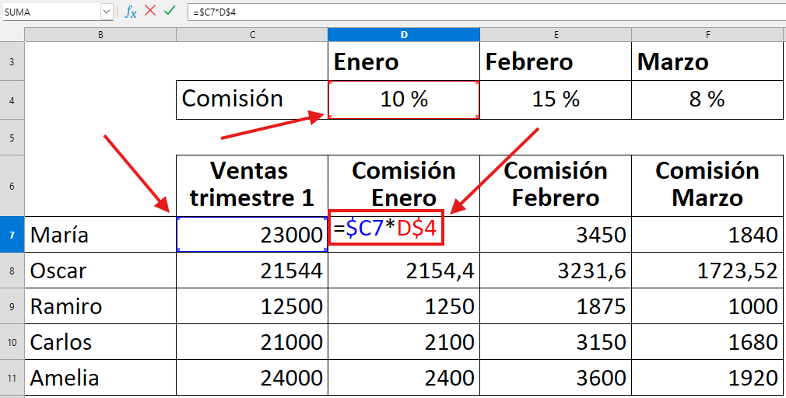
En la celda D7 introducimos la fórmula =
$C7*D$4.Al incluir el símbolo de $ delante del 4 fijamos la fila pero no la columna.
Igualmente fijamos la columna C, de forma que al arrastrar la fórmula se mantiene fija la columna.
Tarea parte 5. Aplicar una fórmula usando referencias mixtas.
Ir a la hoja 4 del documento RA3-CEc-2
- Dar formatos, anchos altos de columnas, colores, fondos, bordes a las tablas para que el documento sea legible. Tenéis libertad total en este apartado.
- Completar la tabla Tabla de multiplicar usando referencias mixtas.
Tarea parte 6.
Ir a la hoja 5 del documento RA3-CEc-2
- Dar formatos, anchos altos de columnas, colores, fondos, bordes a las tablas para que el documento sea legible. Tenéis libertad total en este apartado.
- Para este ejercicio se deberá hacer uso de referencias relativas, absolutas o mixtas.
- Añadir una columna, llamada Total de ventas y utilizar una fórmula básica para calcular el total por producto.
- Ir a la hoja 6 del documento y crear una tabla Comisión sobre ventas con los valores: 10%, 15%, 20%, 25%.
- A la tabla de la hoja 5, añadir 4 columnas C10, C15, C20 y C25.
- Rellenar los valores de la celdas de las columnas C10, C15, C20 y C25 aplicando los porcentajes de la hoja 6.
Aspecto final sin aplicar estilos:
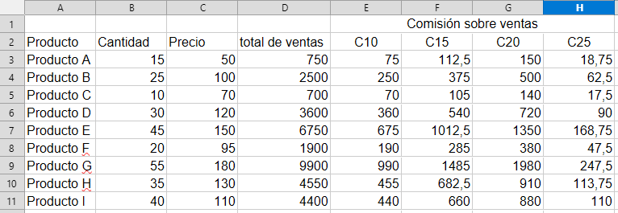
Tarea parte 7.
Ir a la hoja 7 del documento RA3-CEc-2
- Dar formatos, anchos altos de columnas, colores, fondos, bordes a las tablas para que el documento sea legible. Tenéis libertad total en este apartado.
- Para este ejercicio se deberá hacer uso de referencias relativas, absolutas o mixtas.
- Aplicar las formulas necesarias para realizar los siguientes calculos:
- Calcular el porcentaje de los resultados obtenidos sobre el total de los electores.
- Calcular el porcentaje de los resultados obtenidos sobre el número de los votantes.
Tarea parte 8.
Ir a la hoja 8 del documento RA3-CEc-2
- Dar formatos, anchos altos de columnas, colores, fondos, bordes a las tablas para que el documento sea legible. Tenéis libertad total en este apartado.
- Para este ejercicio se deberá hacer uso de referencias relativas, absolutas o mixtas.
- Aplicar las formulas necesarias para realizar una tabla de calcular básica.
Tarea parte 9.
Ir a la hoja 9 del documento RA3-CEc-2
- Dar formatos, anchos altos de columnas, colores, fondos, bordes a las tablas para que el documento sea legible. Tenéis libertad total en este apartado.
- Para este ejercicio se deberá hacer uso de referencias relativas, absolutas o mixtas.
- Aplicar las formulas necesarias para realizar los cálculos necesarios para completar la tabla.
Tarea parte 10.
Ir a la hoja 10 del documento RA3-CEc-2
- Dar formatos, anchos altos de columnas, colores, fondos, bordes a las tablas para que el documento sea legible. Tenéis libertad total en este apartado.
- Para este ejercicio se deberá hacer uso de referencias relativas, absolutas o mixtas.
- Aplicar las formulas necesarias para realizar los cálculos necesarios para completar la tabla.
Tarea RA3-CEc-3 - Formúlas y funciones
Las fórmulas son uno de los elementos fundamentales de cualquier hoja de cálculo.
Permiten automatizar cálculos, analizar datos y obtener resultados dinámicos a partir de la información introducida en las celdas.
Tarea RA3-CEc-3 - Trabajando con fórmulas y funciones
Tarea parte 1. Descargar el archivo
Descargar y abrir el archivo 'RA3-CEc-3' pinchando en el enlace siguiente: Descargar archivo
Tarea parte 2. Aplicar fórmulas a las celdas
En la hoja 1 encontrareís unas tablas con valores.
Trabajos a realizar:
- Conjunto de la hoja de cálculo: Dar formatos, anchos altos de columnas, colores, fondos, bordes a las tablas para que el documento sea legible. Tenéis libertad total en este apartado.
- Fila Total producto → Rellenar las celdas con la fórmula que suma el total de las celdas Producto ## y Total vendedor.
- Fila Promedio venta → Rellenar las celdas con la fórmula que cálcula la media de las celdas Producto ## y Total vendedor.
- Fila Total producto → Rellenar las celdas con la fórmula que saca el valor máximo de las celdas Producto ## y Total vendedor .
- Fila Total producto → Rellenar las celdas con la fórmula que saca el valor mínimo de las celdas Producto ## y Total vendedor.
- Columna Proporción del total → Rellenar las celdas con la fórmula que permita sacar la división entre el total por cada vendedor y el valor de la celda Total producto.
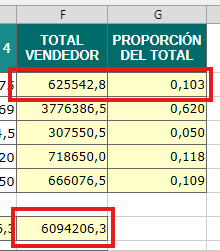
Aspecto final de la hoja (debéis aplicar vuestros estilos).
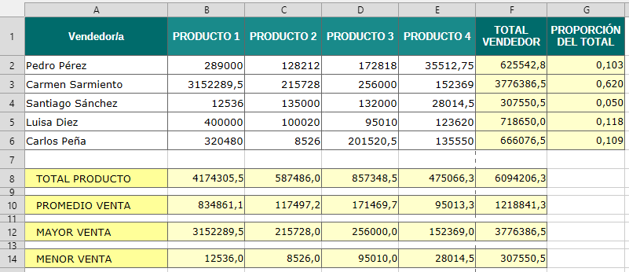
Tarea parte 3. Aplicar fórmulas a las celdas
En la hoja 2 encontrareís unas tablas con valores.
- Conjunto de la hoja de cálculo: Dar formatos, anchos altos de columnas, colores, fondos, bordes a las tablas para que el documento sea legible. Tenéis libertad total en este apartado.
- Campos "Hoja, documento y fecha": En la celda contigua insertar el campo nombre de la hoja, nombre del documento y fecha.
- Usar la fórmula necesaria para rellenar la columna Total precio sin IVA.
- Rellenar a mano la columna Porcentaje IVA consultando la columna Código IVA y la tabla Porcentaje IVA.
- Calcular la columna Monto IVA usando los datos de las columnas Total precio sin IVA y Porcentaje IVA
- Calcular la columna Total precio con IVA usando los datos de las columnas Total precio sin IVA y Monto IVA.
- Usar las fórmulas necesarias para rellenar la tabla Total factura sin IVA.
Aspecto final de la hoja (debéis aplicar vuestros estilos).
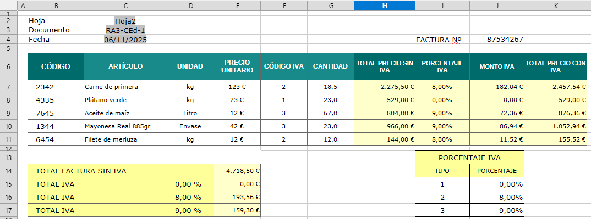
Tarea parte 4. Aplicar fórmulas a las celdas
- Conjunto de la hoja de cálculo: Dar formatos, anchos altos de columnas, colores, fondos, bordes a las tablas para que el documento sea legible. Tenéis libertad total en este apartado.
- Dentro del mismo documento, crear una hoja nueva (Hoja3).
- Columna A: Crear una serie de rango 0 → 2 con incrementos de 0.1.
- Columna B: Buscar la fórmula que permita insertar un número aleatorio entre 0 y 2. Pista: Asistente para funciones → categoría matemáticas → aleatorio...
- Columna C: Buscar la fórmula que permita redondear los valores de la columna 2 a 3 decimales. Pista: Asistente para funciones → categoría matemáticas → redondear...
- Columna D: Buscar la fórmula que devuelva verdadero o falso si comparamos los valores de las columnas Series y Redondear.
- Columna E: Generar unas fechas aleatorias.
Pista: Internamente, las fechas se almacenan como cifras. La parte entera se corresponde a la fecha y la parte decimal a la hora.
La fecha 30/12/1899 se almacena como el número 0.
La fecha 01/01/1900 se almacena como el número 2.
...
La fecha 6/11/25 se almacena como el número 45963. -
Columna F, G y H: Introducir unos nombres y apellidos a mano y concaternarlos insertando un espacio o cualquier otro carácter entre nombre y appelidos.
Aspecto final de la hoja (sin aplicar estilos).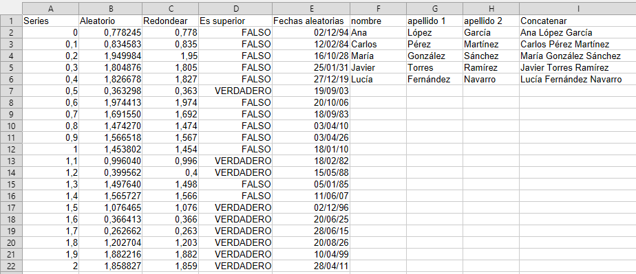
Entrega de la tarea
Subir la tarea a AULES en el apartado correspondiente.
El archivo a subir deberá ser de tipo .ods (formato nativo de LibreOffice Calc).
No se aceptará ningún otro formato de archivo.
Tarea RA3-CEc-4 - Formúlas y funciones avanzadas
En este ejercicio desarrollaremos un calificador de notas aplicado a la nueva ley de FP, es decir:
- Los alumnos deberan obtener una nota superior a 5 en todos los RA's para superar el módulo.
- En cada RA, la nota mínima de cada criterio de evaluación deberá ser superior a 3.
- En cada criterio de evaluación la nota de cada tarea deberá ser superior a 3.
- Para el cálculo de la nota final de cada alumno se aplicará una ponderación entre RA's.
- Para el cálculo de la nota de cada RA se aplicará una ponderación entre CE's.
Tarea RA3-CEc-4 - Trabajando con fórmulas y funciones avanzadas
En este ejercicio, haremos una calificador similar al que se usa para evaluar los alumnos en los ciclos formativos de formacion profesional. Para ello haremos uso de todo lo aprendido hasta ahora y empezaremos a usar el asistente para funciones LibreOffice Calc para elaborar fórmulas avanzadas.
Condiciones para la evaluación del alumnado
- El alumno será evaluado por resultados de aprendizaje (RA) que a la vez se componen de criterios de evaluación (CE). Para aprobar el módulo, el alumno deberá sacar una nota superior o igual a 5 en todos los RA's.
- La nota final que abtendrá el alumno en el módulo será la media ponderada de todos los RA's. Ejemplo:
Nota final módulo = 0.25*RA1 + 0.40*RA2 + 0.35*RA3. - Cada RA se compone de una serie de criterios de evaluación. Para aprobar el RA el alumno deberá sacar una nota superior a 5 en el RA y además una nota superior a 3 en cada criterio de evaluación (CE).
- La nota final de cada RA será la media ponderada de todos los criterios de evaluación. Ejemplo:
Nota final RA2 = 0.25*CEa + 0.50*CEb + 0.25*CEc. - Cada criterio de evaluación se compone de una serie de métodos de evaluación (tareas, exámenes, exposiciones orales...).
- Para poder mediar, el alumno deberá obtener una nota no inferior a 3 en cada método de evaluación.
- La nota final del criterio de evaluación será la media ponderada de todos los métodos de evaluación. Ejemplo:
Nota CEa = 0.50*CEa1 + 0.25*CEa2 + 0.25*CEa3.
Ejemplo real:
RA3. Elabora documentos y plantillas de cálculo, describiendo y aplicando opciones avanzadas de hojas de cálculo.
| Criterios de evaluación de la unidad didáctica: | Ponderación |
|---|---|
| a) Se ha personalizado las opciones de software y barra de herramientas. | 5% |
| CEa = RA3-CEa | |
| b) Se han utilizado los diversos tipos de datos y referencia para celdas, rangos, hojas y libros. | 15% |
| CEb = 0.5xRA3-CEb-1 + 0.5xRA3-CEb-2 | |
| c) Se han aplicado fórmulas y funciones. | 30% |
| CEc = 0.15xRA3-CEc-1 + 0.15xRA3-CEc-2 + 0.15xRA3-CEc-3 + 0.15xRA3-CEc-4 + 0.40xRA3-CEc-5 | |
| d) Se han generado y modificado gráficos de diferentes tipos. | 10% |
| CEd = 0.4xRA3-CEd-1 + 0.6xRA3-CEd-2. | |
| e) Se han empleado macros para la realización de documentos y plantillas. | 5% |
| CEe = RA3-CEe. | |
| f) Se han importado y exportado hojas de cálculo creadas con otras aplicaciones y en otros formatos. | 5% |
| CEf = Evaluado en empresa. | |
| g) = Se ha utilizado la hoja de cálculo como base de datos: formularios, creación de listas, filtrado, protección y ordenación de datos. | 25% |
| CEg = 0.5xRA3-CEg-1 + 0.5xRA3-CEg-2. | |
| h) Se han utilizado aplicaciones y periféricos para introducir textos, números, códigos e imágenes. | 5% |
| CEh = RA3-CEh |
Tarea parte 1. Descargar el archivo
Descargar y abrir el archivo 'RA3-CEc-4' pinchando en el enlace siguiente: Descargar archivo.
La hoja de cálculo se compone de 7 hojas.
- En la hoja Módulo encontraréis las notas de cada RA y más elementos de control estadístico.
- En la hojas RA1, RA2 y RA3 encontraréis las notas de cada criterio de evaluación.
- En la hojas RA1 Ponderaciones, RA2 Ponderaciones y RA3 Ponderaciones encontraréis todas las ponderaciones que se usarán para el cálculo de los RA's, CE's y nota final del módulo.
Tarea parte 2
- Conjunto de la hoja de cálculo: Dar formatos, anchos altos de columnas, colores, fondos, bordes a las tablas para que el documento sea legible. Tenéis libertad total en este apartado.
- Aunque se ponga como primer elemento de la tarea, no se recomienda empezar por aplicar estilos, esperar a tener la tarea completada para hacerlo.
Tarea parte 3
Hojas RA1 Ponderaciones, RA2 Ponderaciones y RA3 Ponderaciones.
- Poner una fórmula que sume el total de los porcentajes de las hojas, RA1 Ponderaciones, RA2 Ponderaciones y RA3 Ponderaciones.
-
Poner un formato condicional que aplique el estilo bueno si el resultado es igual a 100% y error si no lo es.
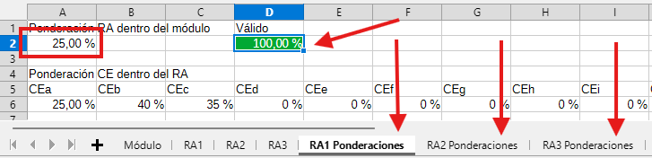
-
Poner una fórmula que sume el total de las ponderaciones de los CE dentro del RA.
-
Poner un formato condicional que aplique el estilo bueno si el resultado es igual a 100% y error si no lo es.
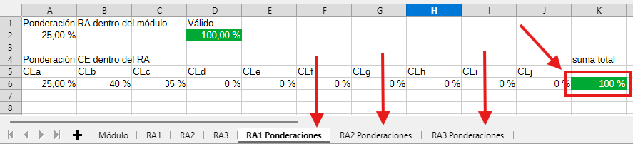
-
Poner una fórmula que sume el total de las ponderaciones dentro de cada CE.
- Poner un formato condicional que aplique el estilo bueno si el resultado es igual a 100% y error si no lo es.
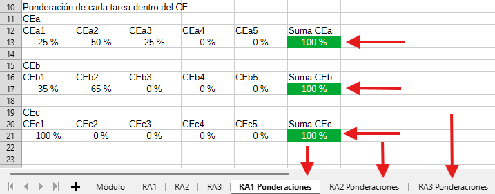
Tarea parte 4
Hojas RA1, RA2 y RA3.
- Insertar la columna Todas entregadas y aplicar la fórmula lógica Y(condición_1;condición_2;...) que devolverá verdadero si todas las tareas se han entregado es decir tienen una nota superior (o diferente) a 0.
- Insertar la columna Todas superiores a 3 y aplicar una fórmula lógica Y() que devolverá verdadero si todas las tareas tienen una nota superior a 3.
- Insertar la columna Válido y aplicar una fórmula lógica Y() que devolverá verdadero si las 2 columnas anteriores son verdaderas. De lo contrario devolverá falso.
- Poner un formato condicional y aplicar el estilo bueno si el resultado verdadero y alerta si no lo es.
Resultado esperado hasta ahora (sin aplicar estilos).
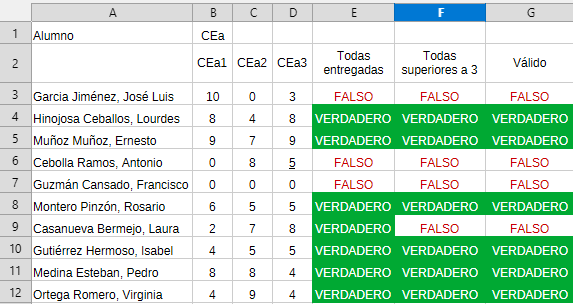
- Insertar la columna Nota CEa y aplicar la fórmula matricial SUMA.PRODUCTO(intervalo de valores;intervalo de ponderadores) que calcule la nota ponderada del CEa con la ayuda de los valores de la hoja RA1 Ponderaciones (también se puede hacer sumando y ponderado las notas de los CEa).
- Insertar la columna Primer crivado y aplicar la fórmula lógica SI(condición; Resultado si condición es verdadero; Resultado si condición es falso) que devolverá el valor de la columna anterior si la columna Válido es verdadero y Recuperar si la columna Válido es falsa.
- Insertar la columna Nota final CE y aplicar la fórmula lógica SI() que devolverá el valor de la columna anterior con las siguientes condiciones:
Si la nota es superior a 3, la fórmula devolverá el valor de la columna Primer crivado.
Si la nota es inferior o igual a 3 o el valor de la celda es Recuperar, la fórmula devolverá Recuperar. - Poner un formato condicional a la columna Nota CEa de la siguiente manera:
Si la nota es superior a 5 aplicar el estilo bueno.
Si la nota es igual a 5 aplicar el estilo neutro.
Si la nota está entre 4.99 y 3.01 aplicar el estilo malo.
Si la nota es inferior o igual a 3 aplicar el estilo error. -
Poner un formato condicional a las columna Primer crivado y Nota final CE de la siguiente manera:
Si la celda contiene "Recuperar", aplicar el estilo malo.
Si la celda no contiene "Recuperar", aplicar el estilo neutro.
Resultado esperado hasta ahora (sin aplicar estilos e inmovilizando una columna).
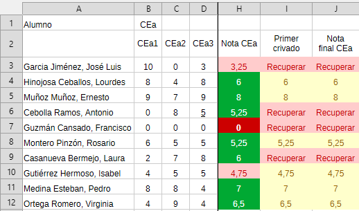
-
Repetir los pasos anteriores con los criterios de evaluación CEb y CEc.
Resultado esperado hasta ahora (sin aplicar estilos).
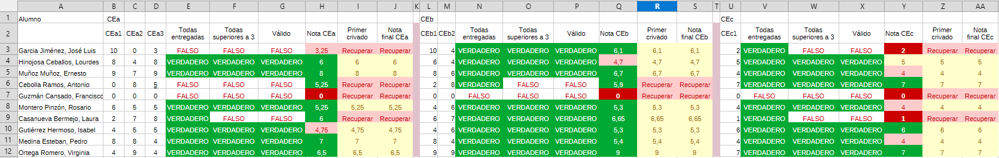
-
La columna Nota final RA ya tiene la fórmula que calcula la nota final del RA que devuelve la nota del alumno o Ordinaria si el alumno debe recuperar algún RA. Aplicarle un formato condicional que aplique el estilo Malo si el contenido de la celda es igual a "Ordinaria" y "Bueno" si es diferente.
- Las columnas CEa, CEb, CEc ya tienen la fórmula que decide si el alumno ha de recuperar el CE correspondiente. Aplicarle un formato condicional que aplique el estilo Error si el contenido de la celda es igual a "X" y "Neutro" si es diferente a "X".
Resultado esperado hasta ahora (sin aplicar estilos).
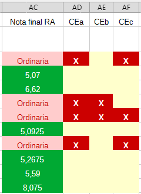
Resultado final de la hoja RA1.
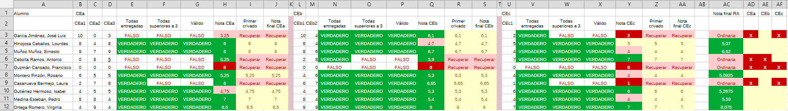
Repetir las instrucciones anteriores con las hojas RA2 y RA3 y también con las hojas RA1 Ponderaciones, RA2 Ponderaciones y RA3 Ponderaciones.
Resultado esperado para RA2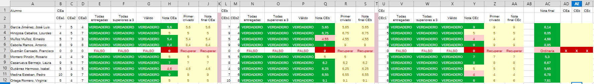
Resultado esperado para RA3
Tarea parte 5
Hoja: Módulo.
Podéis descargar la hoja de cálculo con las hojas RA1, RA2 y RA3 ya completadas desde el siguiente enlace: Descargar archivo con RA's completados
Columnas RA1, RA2 y RA3.
- Recuperar los valores de la columna "Nota final RA" (columna AC) de las hojas RA1, RA2 y RA3.
- Aplicar un formato condicional Malo si el valor de la celda contiene "Ordinaria" y Neutro si no lo contiene.
Columna Nota final módulo
- Aplicar la fórmula: SI(ESNUMERICO(suma ponderada de RA1, RA2 y RA3); (suma ponderada de RA1, RA2 y RA3); "Ordinaria") (no hacer, la fórmula ya está puesta).
- Aplicar un formato condicional Malo si el valor de la celda contiene "Ordinaria" y Bueno si no lo contiene.
Celda aprobados
- En esta celda aparecerá la cantidad de alumnos que han aprobado el módulo es decir, solo contaremos las celdas que contienen valores numéricos.
- Para ello usar la fórmula CONTAR(intervalo de celdas a contar)
Celda suspensos
- En esta celda aparecerá la cantidad de alumnos que no han aprobado el módulo es decir, solo contaremos las celdas que contienen la palabra "Ordinaria".
- Para ello usar la fórmula CONTAR.SI(intervalo de celdas a contar; criterio de selección).
Resultado esperado para la hoja 'Módulo'
Celdas 'Notas entre 5 y 7' y 'Notas entre 7 y 10'
- En estas celdas apareceran la cantidad de alumnos que han obtenido una nota entre 5 y 7 y entre 7 y 10 respectivamente.
- Para ello usar la fórmula CONTAR.SI.CONJUNTO(intervalo_1 de celdas a contar; criterio_1 de selección; intervalo_2 de celdas a contar; criterio_2 de selección; ...).
Entrega de la tarea
Subir la tarea a AULES en el apartado correspondiente.
El archivo a subir deberá ser de tipo .ods (formato nativo de LibreOffice Calc).
No se aceptará ningún otro formato de archivo.
Tarea RA3-CEd-1 - Gráficos
Los gráficos son representaciones visuales de datos que facilitan la comprensión y el análisis de la información.
Permiten identificar patrones, tendencias y relaciones entre diferentes conjuntos de datos de manera más intuitiva que con tablas de datos.
Tarea RA3-CEd-1 - Trabajando con gráficos
Tarea parte 1. Descargar el archivo
Descargar y abrir el archivo 'RA3-CEd-1' pinchando en el enlace siguiente: Descargar archivo.
La hoja de cálculo se compone de 6 hojas.
- En cada hoja encontraréis unas tablas con datos de los cuales deberéis realizar una representación gráfica.
Tarea parte 2
Hoja 1: Instituto nacional de estadística - Gráficos de columnas
- Conjunto de la hoja de cálculo: Dar formatos, anchos altos de columnas, colores, fondos, bordes a las tablas para que el documento sea legible. Tenéis libertad total en este apartado.
- Rellenar las celdas vacías de la tabla (Total, Media, Mínimo, Máximo) con la fórmula correspondiente.
- Crea un gráfico de columna (tipo Normal, vista 3D).
- Selecciona el rango de celdas A2:C14.
- Ir a Insertar → Gráfico → Seleccionar Columna.
- Pulsar Siguiente y comprobar que el intervalo de datos es correcto, así como el resto de opciones.
- Pulsar Siguiente y comprobar que la serie de datos es correcta, así como el resto de opciones.
- Pulsar Siguiente y poner los títulos:
- Título: Población de España (2010-2022)
- Eje X: Meses
- Eje Y: Años
- Aspecto final sin aplicar estilos:
Tarea parte 3
Hoja 2: Instituto nacional de estadística parte 2 - Mejorando la representación de los gráficos de columnas, parte 1
Repetir los pasos de la hoja 1 pero mejorando la representación del gráfico con los siguientes elementos:
- En series de datos → Hombre → Color de relleno → Seleccionar el intervalo de datos de la hoja 3.
- En series de datos → Mujer → Color de relleno → Seleccionar el intervalo de datos de la hoja 3.
- Aspecto final sin aplicar estilos:
Tarea parte 4
Hoja 4: Instituto nacional de estadística parte 3 - Mejorando la representación de los gráficos de columnas, parte 2
Repetir los pasos de la hoja 2 pero esta vez seleccionar una reprensentación 3D. Además deberéis personalizar los colores y los efectos del gráfico.
- Estirar el gráfico para ampliar el efecto 3D.
- Personalizar la leyenda del gráfico: Tipo color y tamaño de letra, tipo y color de fondo, ancho color de los bordes...
- Personalizar las leyendas de los ejes X, Y: Tipo color y tamaño de letra, tipo y color de fondo, ancho color de los bordes...
- Personalizar los índices de los ejes X, Y: Tipo color y tamaño de letra, tipo y color de fondo, ancho color de los bordes...
- Personalizar el título del gráfico: Tipo color y tamaño de letra, tipo y color de fondo, ancho color de los bordes...
- Personalizar la base del gráfico: Tipo y color...
- Personalizar las cuadrículas del gráfico: Tipo y color...
- Personalizar el gráfico: Tipo y color...
- Personalizar la área del gráfico: Tipo y color...
- Aspecto final:
Tarea parte 5
Hoja 5: Instituto nacional de estadística parte 4 - Estilo de líneas. Realizar un gráfico de líneas con los datos proporcionados en la hoja 5, pero esta vez en líneas suavizadas.
- Modificar los intervalos del eje Y para que vayan desde 0 hasta 100 (pista → Escala Eje Y).
- Cambiar la posición de la leyenda del eje Y a Fin (pista → Posición Eje Y).
- Cambiar la posición de la leyenda del eje Y a Fin (pista → Posición Eje Y).
-
Aplicar unos estilos al resto de elementos del gráfico (título, leyenda, ejes, fondo, gráfico...) similares a los del punto anterior.
-
Aspecto final (sin aplicar estilos):
Tarea parte 6
Hoja 6: Representación de funciones y ajuste de ejes.
A diferencia de las representaciones anteriores, la representación de funciones matemáticas no se basa en datos tabulados para el eje X, sino en datos contínuos.
Por ese motivo deberemos usar el tipo XY (dispersión) para representar funciones matemáticas.
-
Aspecto antes de seguir con la personalización del gráfico.
-
EJE Y
Escala- Cambiar el mínimo y máximo del eje Y para que vaya desde -1.1 hasta 1.1 y el intervalo principal sea de 0.1.
- Cambiar el intervalo principal del eje Y a 0.1.
Posición
- Cambiar la posición del eje Y para que cruce el eje X en el valor 180 (pista → Posición Eje Y).
- Colocar las etiquetas en Cerca de eje (el otro lado).
- Poner las marcas de intervalo del eje Y a exterior e interior para las principales y secundarias.
Línea
- Color verde.
Etiqueta
- Girada 40 grados.
Tipo de letra
- Arial, tamaño 8.
Efectos tipográficos
- Color de letra azul.
-
EJE X
- Cambiar la escala del eje X para que vaya desde 0 hasta 360, con un intervalo principal de 30 y un secundario de 10.
- Cambiar la posición del eje X para que cruce el eje Y en el valor -1.1.
- Cambiar las marcas de intervalo del eje X a exterior e interior para las principales y interior para las secundarias.
- Línea de eje de color naranja.
- Tipo de letra, arial, 8, azul.
- Aplicar una cuadricula vertical al gráfico (pista → Cuadrícula Eje X).
-
Gráficos
- Cambiar el color de la línea de la función Seno a rojo y el grosor a 0.02 puntos.
- Cambiar el color de la línea de la función Coseno a azul y el grosor a 0.02 puntos.
-
Aplicar unos estilos al resto de elementos del gráfico (título, leyenda, ejes, fondo, gráfico...) similares a los del punto anterior.
-
Aspecto final (sin aplicar estilos):
Entrega de la tarea
Subir la tarea a AULES en el apartado correspondiente.
El archivo a subir deberá ser de tipo .ods (formato nativo de LibreOffice Calc).
No se aceptará ningún otro formato de archivo.
Tarea RA3-CEd-2 - Gráficos
Tarea RA3-CEd-2 - Gráficos avanzados
Descargar el archivo
Descargar y abrir el archivo 'RA3-CEd-2' pinchando en el enlace siguiente: Descargar archivo.
Hoja 1 - Diagrama de Gantt 1/9
Un diagrama de Gantt es una herramienta gráfica utilizada para planificar, programar y controlar proyectos. Es muy común en gestión de proyectos, ingeniería, desarrollo de software, educación y cualquier ámbito donde sea necesario organizar actividades en el tiempo.
- Partimos de la tabla de la hoja 1.
- El proyecto consta de 4 fases, y cada una de ellas consta de 4 procesos que deben realizarse con una Fecha de inicio y durante un número de días determinado. La Fecha de finalización prevista deberá ser calculada: Es el resultado de sumar a la fecha de inicio con los días de duración del proceso.
- La columna Completado permite controlar qué parte del trabajo ya está realizado y qué parte queda pendiente.
- Las columnas Pendiente y Realizado se calcularán en función de la Duración y el porcentaje de Completado.
- Aspecto final de la hoja de cálculo.
Hoja 1 - Diagrama de Gantt 2/9
Gráfico
- Seleccionamos cualquier celda de la tabla y creamos un gráfico de barras en pilas.
- En rango de datos no tocamos nada.
- En serie de datos solo dejamos Fecha inicio, Realizado y Pendiente.
- En elementos del gráfico dejamos todos los campos en blanco.
- Aspecto de la gráfica.
Hoja 1 - Diagrama de Gantt 3/9
Personalización gráfico
Para poder acceder a los menús del gráfico, haremos doble click sobre el gráfico hasta que aparezcan cuadrados rellenos como delimitadores de la gráfica. Entonces nos aparecerá una barra de herramientas para seleccionar las partes del gráfico a personalizar.
Hoja 1 - Diagrama de Gantt 4/9
Eje X
- Pestaña escala → Cambiar el orden en que se presentan los elementos del eje X (marcar Dirección inversa).
Hoja 1 - Diagrama de Gantt 5/9
Eje Y
- Pestaña números → Desmarcar Formato de origen, en Categoria seleccionar Fecha y en Formato, 01/12/99.
- Pestaña escala, ponemos Mínimo a 15/01/2025, Máximo a 24/04/2025 e Intervalo principal a 10.
Hoja 1 - Diagrama de Gantt 6/9
Serie de datos Fecha inicio
- Haremos invisible esta serie seleccionando Ninguno en la pestaña Area.
- En la pestaña Opciones dejamos el espaciado en 50% (permite ajustar la altura de las barras).
Hoja 1 - Diagrama de Gantt 7/9
Serie de datos Pendiente y Realizado
- Cambiar los colores de las series al gusto de cada uno.
Hoja 1 - Diagrama de Gantt 8/9
Para evitar que se vea en la leyenda la serie Fecha de inicio heremos:
- Ocultar la entrada de leyenda para la serie Fecha de inicio (pista → opciones).
Hoja 1 - Diagrama de Gantt 9/9
- Personalizar todos los elementos del gráfico al gusto de cada uno.
Ejemplo de gráfico de Gantt después de configurar estilos
Hoja 2 - Pruebas de acceso a la universidad 1/3
En la hoja 2 encontrareís una tabla con los resultados de las pruebas de acceso a la universidad de una serie de alumnos.
Trabajos previos a realizar
- Calcular la media de la parte 1 de las pruebas.
- Calcular la media de la parte 2 de las pruebas.
- Calcular la nota PAU que será la media de las partes 1 y 2.
- El cáculo de la nota final se hará de la siguiente manera: SI (Y(Media PAU > 3; Expediente > 3); Entonces, Media PAU * 0.4 + Expediente * 0.6; de lo contrario, "-")
- Las fórmulas para las celdas de las columnas Nota final y Calificación ya están puestas pero debereís poner un formato condicional que marque en rojo las celdas con Insufiente y No apto.
Resultado final hoja de notas
Hoja 2 - Pruebas de acceso a la universidad 2/3
Trabajos a realizar
- Calcular la media de las notas de la columna (formula → PROMEDIO())
- Calcular la cantidad de alumnos que han sacado una nota inferior o igual a 3 (formula → CONTAR.SI(Intervalo(); condición)).
- Calcular la cantidad de alumnos que han sacado la calificación de NO APTO. (fórmula → CONTAR.SI(Intervalo(); condición)).
- Calcular la cantidad de alumnos que han sacado la calificación de "Insuficiente", "Sobresaliente", "Notable", "Bien", "Suficiente" e, "Insuficiente". (fórmula → CONTAR.SI(Intervalo(); condición)).
Resultado final
Hoja 2 - Pruebas de acceso a la universidad 3/3
Trabajos a realizar
Insertar una gráfica con un resultado similar al de la siguiente imagen.
Sois libres de personalizar la imagen añadiendo, titulo, color de fondo, color de líneas, etc...
Entrega de la tarea
Subir la tarea a AULES en el apartado correspondiente.
El archivo a subir deberá ser de tipo .ods (formato nativo de LibreOffice Calc).
No se aceptará ningún otro formato de archivo.
Tarea RA3-CEe - Introducción a las macros
Commo ya hemos visto en el tema sobre libreOffice writer, una macro es una secuencia de instrucciones que permite automatizar tareas repetitivas dentro de LibreOffice.
¿Para qué sirven?
- Rellenar o modificar datos automáticamente.
- Hacer cálculos complejos sin usar fórmulas en la hoja.
- Importar información de otros archivos o de internet.
- Crear informes o exportar datos.
- Controlar formularios y botones interactivos.
- Ejecutar una acción cada vez que se abra el archivo.
Para habilitar la grabación de macros en LibreOffice Calc, consultar el tema sobre procesadores de textos.
Tarea RA3-CEe
Parte 1 - Grabación de una macro
- Ir a Herramientas → Macros → Grabar macros
- Grabar una macro que crea una tabla con unos valores y aplique unos cuantos estilos.
- Nota importante. Con la versión actual de LibreOffice (25.8.1.1), la grabación de macro sigue siendo experimental. Por ese motivo es importante secuenciar las opraciones durante la grabación. Por ejemplo, primero, definir los datos, luego, la altura y anchura, luego, los colores. De lo contrario es probable que algunos procesos no se ejecuten durante la ejecución posterior de la macro.
Ejemplo de tabla: - Guardar la macro dentro del documento, no dentro de LibreOffice ya que de hacerlo así no viajará con el documento.
Parte 2 - Creación de un botón para ejecutar la macro
A diferencia del writer donde el uso de una macro suele resultar puntual, en calc su uso puede llegar a ser intensivo. Del mismo modo, es bastante habitual necesitar varias macros en un mismo documento lo que hace que usar atajos de teclado para llamarlas pueda resultar en errores de ejecución.
Por esos motivos es recomendable usar controles por botones.
- Hacer visibles los controles de formulario.
- Seleccionar un botón y colocarlo sobre la hoja de cálculo. Ajutar al gusto el tamaño.
- Hacer click derecho sobre el botón y seleccionar Propiedades del control.
- Dentro de la pestaña General, ir al campo Etiqueta y cambiar el nombre del botón a Crear tabla.
- Dentro de la pestaña Eventos, buscar el campo Botón del ratón pulsado y pinchar en el botón de la derecha.
- Una vez abierta la ventana Asignar acción, pulsar el botón Macro.
- Una vez abierta la ventana Selector de macros, seleccionar la macro a asignar al botón.
- Aceptar y cerrar la ventana de Propiedades: Botón.
- para poder empezar a usar el botón deseleccionar el modo de diseño del menú Controles de formulario.
Parte 3 - Primeros pasos en la edición de macros
Disponemos de una macro pero, puede que no se adecúe a nuestras necesidades. La primera opción sería grabar una nueva macro pero puede resultar más simple modificar nuestra macro.
- Para editar una macro ir a Herramientas → Macro → Editar macro.
Aparecerá una ventana similar a la siguiente imagen y seleccionamos la macro a editar.
- Buscamos las líneas de código dónde se escribe el texto y lo modificamos segun nuestras necesidades.
- Guardamos las modificaciones y ejecutamos la macro de nuevo para ver los resultados.
Parte 4 - Automatizar la importación de datos externos
En este ejercicio automatizaremos la recuperación de la temperatura de la localidad de Catadau desde una página web.
Enlace de la página web: https://www.tiempoyradar.es/tiempo/catadau/2025569
- Añadir una hoja a vuestro documento.
- En esa hoja nueva, iniciar la grabación de una macro.
- Ir a Hoja → Enlaces externos
- Dentro de la ventana Datos externos pegar la url de la página web y pulsar intro.
- Dentro de opciones de importación pulsar Aceptar.
- Dentro de Tablas e intervalos disponibles seleccionar HTML_all.
- Resultado de la importación.
- Crear un botón y asignarle la macro que acabais de crear.
- Resultado final.
Entrega de la tarea
Subir la tarea a AULES en el apartado correspondiente.
El archivo a subir deberá ser de tipo .ods (formato nativo de LibreOffice Calc).
No se aceptará ningún otro formato de archivo.
Tarea RA3-CEg-1 - Filtros, agrupación, validación, protección de datos y plantillas de documentos
Descargar el archivo
Descargar y abrir el archivo 'RA3-CEg-1' pinchando en el enlace siguiente: Descargar archivo.
Hoja 1 - Estilos / Formatos
Como se puede ver la hoja de cálculo contiene unos supuestos datos personales de un gran número de personas.
También podemos ver que algunos datos están justificados a la izquierda y otros a la derecha.
Por convención, en la mayoria de las hojas de cálculo, el justificado de los datos sigue la siguiente regla:
- Texto: Los campos que contienen texto (o una mezcla de texto y números) se justifican por defecto a la izquierda.
- Números: Los campos que contienen valores numéricos puros (incluyendo fechas y horas, que son manejados internamente como números) se justifican por defecto a la derecha.
 Encontrar los datos aparentemente numéricos que han sido tratados como texto ¿Cómo se distinguen?
Encontrar los datos aparentemente numéricos que han sido tratados como texto ¿Cómo se distinguen?
 Para poder ver todo el contenido de las celdas usaremos la opción anchura óptima que pondrá el ancho de la columna al ancho de su contenido + un márgen que podremos ajustar.
Para poder ver todo el contenido de las celdas usaremos la opción anchura óptima que pondrá el ancho de la columna al ancho de su contenido + un márgen que podremos ajustar.
 Aplicar estilos a los títulos de las columnas para que se distingan de su contenido.
Aplicar estilos a los títulos de las columnas para que se distingan de su contenido.
 Aplicar estilos para facilitar la lectura de los contenidos.
Aplicar estilos para facilitar la lectura de los contenidos.
Filtro automático
Filtro automático 1/2
- Copiar y pegar (o duplicar hoja) los datos de la hoja 1 en la hoja 2.
- Para activar el filtro automático haremos un clic en cualquier celda con contenido, y seleccionaremos en Datos → Filtro automático.
Calc reconocerá de forma inmediata todas las celdas contiguas a la seleccionada, y considerará que la primera celda de cada columna del rango considerado es la etiqueta o encabezado de columna.
Presentará en todas las etiquetas de columna un botón desplegable que nos permitirá elaborar filtros seleccionando o no algunos valores.
- Elaborar un filtro que extraiga los datos de personas con las siguientes características:
Sexo → Mujer
Población → Barcelona
Nivel académico → EGB
Solución
Filtro automático 2/2
- Copiar y pegar (o duplicar hoja) los datos de la hoja 1 en la hoja 3.
- Elaborar un filtro que extraiga los datos de personas con las siguientes características:
Altura → Entre 1.55 y 1.59 O entre 1.68 y 1.72 O entre 1.77 y 1.81 O entre 1.86 y 1.9
Salud → Buena O excelente
Característica 2 → Alegría O Inteligencia O Sencillez o Sinceridad
Filtro estándar
- Como hemos visto en el ejercicio 2 de filtro automático, algunas consultas pueden resultar tiedosas. Para ese tipo de consultas es recomendable usar filtros estándar.
- Para activar la opción de filtro estándar, seleccionar una celda con contenido y luego ir a Datos → Más filtros → Filtro estándar.
Se mostrará el siguiente diálogo, desde el cual, podremos establecer para cada columna una o más condiciones asociadas a un valor. - Además, también podremos:
- Establecer condiciones Y entre los campos; se deben cumplir todas las condiciones.
- Establecer condiciones O entre los campos; se debe cumplir al menos una de las condiciones.
Filtro estándar 1/3
- Copiar y pegar (o duplicar hoja) los datos de la hoja 1 en la hoja 4.
- Elaborar un filtro que extraiga los datos de personas con las siguientes características:
Población → Barcelona
Y
Sexo → Hombre
Y
Móvil → Vacío
Solución
Filtro estándar 2/3
- Copiar y pegar (o duplicar hoja) los datos de la hoja 1 en la hoja 5.
- Elaborar un filtro que extraiga los datos de personas con las siguientes características:
Población → Valencia
Y
Fecha de nacimiento → <= 1960
O
Hijos → >=3
Filtro estándar 3/3
- Copiar y pegar (o duplicar hoja) los datos de la hoja 1 en la hoja 6 y crear una hoja 7 vacia.
- Elaborar un filtro que extraiga los datos de personas con las siguientes características:
Población → Girona
Y
Sexo → Hombre
O
Población → Valencia
Y
Ahorros → >= 60000
Y que además guarde el resultado de la consulta en la hoja 7
Filtro avanzado
A diferencia de los filtros automático y estándar, el filtro avanzado requiere realizar algunas adaptaciones a la hoja de cálculo.
Filtro avanzado 1/2
- Copiar y pegar (o duplicar hoja) los datos de la hoja 1 en la hoja 8.
- Insertar algunas filas encima de los datos.
- En la parte libre encima de los datos definiremos las condiciones del filtro avanzado.
- Vamos a Filtro avanzado y en la nueva ventana pinchamos en el botón que nos permitirá seleccionar la tabla de condiciones.
- Resultado
Filtro avanzado 2/2
- Copiar y pegar (o duplicar hoja) los datos de la hoja 1 en la hoja 9.
- Elaborar un filtro que extraiga los datos de personas con las siguientes características:
Población → Zaragoza
Sexo → Hombre
Ingresos mensuales → > 1500
O
Sexo → Mujer
Ingresos mensuales → Entre 400 y 1000
Nivel académico → Elementales
Resultado
Ordenación rápida de datos
- Copiar y pegar (o duplicar hoja) los datos de la hoja 1 en la hoja 10.
- Resultado
Ordenación de datos por criterios (agrupación)
- Copiar y pegar (o duplicar hoja) los datos de la hoja 1 en la hoja 11.
- Posicionarse en la zona de datos y seleccionar Ordenar
- Realizar una agrupación con las condiciones siguientes:
Clave de ordenacion 1 → Población
Clave de ordenacion 2 → Hijos
Clave de ordenacion 3 → Sexo
Validación de datos
La validación de datos permite definir las reglas sobre qué tipo de información o valores se pueden introducir en una o más celdas.
Su principal objetivo es mantener la coherencia y exactitud de los datos en la hoja de cálculo, evitando errores de entrada.
Validación de datos 1/2
- Copiar y pegar (o duplicar hoja) los datos de la hoja 1 en la hoja 12.
- Seleccionar la columna con los datos de Sexo
- Ir a Validez y rellenar los campos.
- Permitir → Lista
- Mostrar lista de selección
Validación de datos 2/2
- Copiar y pegar (o duplicar hoja) los datos de la hoja 1 en la hoja 13.
- Seleccionar la columna con los datos de Hijos
- Configurar el validador con las siguientes condiciones:
- Entero, no permitir celdas vacías, mayor que o igual a 0, mínimo 0.
- Ayuda de entrada, mostrar ayuda de entrada, título "Ayuda de entrada", Texto de la ayuda de entrada "Introducir un valor entero superior o igual a 0.".
- Aviso de error, título "Error de entrada", Texto del mensaje de error "Debe introducir un valor entero superior o igual a 0.".
Protección de datos
La protección de datos permite restringir y controlar quién puede ver o modificar el contenido, el formato o la estructura de una hoja de cálculo, evitando así cambios accidentales o no autorizados.
Protección de datos 1/2
- Copiar y pegar (o duplicar hoja) los datos de la hoja 1 en la hoja 14.
- Ir a Herramientas → Proteger hoja.
- En la ventana poner como contraseña 1234.
Protección de datos 2/2
- Crear una hoja nueva y llamarla hoja 15.
- Implementar un calculador básico como el del siguiente ejemplo:
- En este caso solo dejaremos desprotegidas algunas celdas:
- Seleccionar la celda B1 es decir la celda que contiene en el ejemplo el valor 5.
- Ir a Formato de celdas y en la pestaña Protección de celdas no marcar la opción Protegida.
- Proteger la hoja (con o sin contraseña) y comprobar que la única celda que se puede modificar es la celda B2.
Plantillas
Las plantillas son archivos modelo que sirven como patrón de inicio para crear nuevos documentos de hoja de cálculo.
El objetivo principal es ahorrar tiempo, estandarizar el diseño, asegurar la coherencia y evitar que se sobrescriba el documento original.
Una de las características de las plantillas es que al abrirlas, generan un documento nuevo que deberá ser guardado con un nombre nuevo.
- Guardar el documento como plantilla es decir con extensión .ots (t= template) y no .ods (d= data) .
Entrega de la tarea
Subir la tarea a AULES en el apartado correspondiente.
El archivo a subir deberá ser de tipo .ots (plantilla de LibreOffice Calc).
No se aceptará ningún otro formato de archivo.
Tarea RA3-CEg-2 - Creación de un cuadro de diálogo
En esta tarea, haremos un cuadro de dialogo (parecido al de la siguiente imagen), que nos permitirá mediante una macro, introducir datos en una tabla.
Macro
- Abrir el cuadro de diálogo y pulsar sobre el icono de la derecha para copiar el contenido de la macro.
Macro: InsertarDatosDesdeDialogo
REM ***** BASIC *****
Sub InsertarDatosDesdeDialogo
Dim oDialog As Object
Dim oCampo1 As Object, oCampo2 As Object, oCampo3 As Object
Dim valor1 As String, valor2 As String, valor3 As String
Dim oDoc As Object, oHoja As Object
Dim filaLibre As Long
Dim cursor As Object
' Cargar el cuadro de dialogo
oDialog = CreateUnoDialog(ThisComponent.DialogLibraries.Standard.Dialogos)
' Cargar controles
oCampo1 = oDialog.getControl("Texto1")
oCampo2 = oDialog.getControl("Texto2")
oCampo3 = oDialog.getControl("Texto3")
' Mostrar el diálogo y procesar si se pulsa Aceptar (Execute = 1)
If oDialog.Execute() = 1 Then
' poner valores introducidos en variablas
valor1 = oCampo1.Text
valor2 = oCampo2.Text
valor3 = oCampo3.Text
' Cargamos el documento
oDoc = ThisComponent
' Vamos a la hoja 2
oHoja = oDoc.Sheets.getByName("Hoja2")
' Buscar primera fila vacía (si la hoja está vacía, EndDown se queda en A1, por eso +0/1)
cursor = oHoja.createCursorByRange(oHoja.getCellRangeByName("A1"))
cursor.gotoEndOfUsedArea(True)
if cursor.RangeAddress.EndRow = 0 AND oHoja.getCellByPosition(0,0).String = "" Then
filaLibre = 0 ' La hoja está completamente vacía
Else
filaLibre = cursor.RangeAddress.EndRow + 1
End If
'Escribir valores
oHoja.getCellByPosition(0, filaLibre).String = valor1
oHoja.getCellByPosition(1, filaLibre).String = valor2
oHoja.getCellByPosition(2, filaLibre).String = valor3
End If
Exit Sub
End Sub
-
Ir a Macros → Editar macros.
Una vez abierta la ventana ir a Mis macros y diálogos → Standard → macro.
-
Una vez la ruta seleccionada, pegar la macro en el campo de la derecha. Si todo ha ido bien, veréis que la macro "InsertarDatosDesdeDialogo" ya está disponible para su uso.
Nota: Como se puede ver la macro se ha guardado en los directorios de LibreOffice, no de vuestro documento. -
Guardamos cerramos la ventana y volvemos al documento que tenemos abierto.
Creación del Cuadro de diálogo 1/2
- Asegurarse de tener 2 hojas creadas (Hoja1 y Hoja2) en eñ documento que tenéis abierto.
- Ir a Macros → organizar diálogos...
- Seleccionar vuestro documento, pulsar Nuevo... y poner como nombre Dialogos.
- Si todo ha ido bien os deberá aparecer de la siguiente manera.
Creación del Cuadro de diálogo 2/2
- Vamos a Macros → organizar diálogos... seleccionamos nuestro cuadro de diálogo y esta vez pulsamos Editar.
- Nos aparecerá una ventana similar a la siguiente.
- En la parte de la derecha tenemos nuestro cuadro de diálogo, dentro del cual iremos poniendo los elementos necesarios a la práctica.
Poner las etiquetas
- Lo primero que haremos es poner las etiquetas que guiaran al usuario sobre los datos que debe introducir.
- En la parte de abajo de la pantalla. Seleccionamos Etiqueta. Posicionamos la etiqueta dentro de nuestro cuadro de diálogo, definimos aproximadamente el tamaño y posición.
- Una vez creada la etiqueta, vamos al cuadro General de la izquierda y aplicamos estilos y afinamos la posición y el tamaño de la etiqueta modificando los valores de los campos correspondientes.
- Al final deberemos tener un resultado similar al siguiente.
Poner los cuadros de texto
- Ahora pondremos los cuadros de texto donde, el usuario irá introduciendo los datos.
- Esta vez seleccionamos Cuadro de texto. Posicionamos la etiqueta dentro de nuestro cuadro de diálogo, definimos aproximadamente el tamaño y posición.
- Prestaremos especial atención a que Texto1 esté al lado de Nombre y así, sucesivamente.
- Ajustamos tamaños y posición y nos aseguramos que la opción Solo lectura esté en No.
- Al final deberemos tener un resultado similar al siguiente.
Poner los botones
- Para finalizar el cuadro de diálogo, pondremos los botones de Introducir y Aceptar.
- Boton introducir: Seleccionamos Botón, lo posicionamos en el cuadro y nos aseguramos de tener la opción Tipo de botón en Aceptar.
- Boton Cancelar: Repetimos los pasos anteiores pero esta vez pasamos la opción Tipo de botón a Cancelar.
Botón para llamar al cuadro de diálogo
- Está vez, en lugar de asignar la macro a un botón de control de formulario, la asignaremos a una forma (también lo podemos hacer con una imagen, etc...).
- Vamos a Insertar → Forma básica y seleccionamos una forma al gusto.
- Le aplicamos estilos para obtener un resultado similar al siguiente.
- Para finalizar seleccionamos la imagen, hacemos clic derecho, seleccionamos Asignar macro... y le asignamos la macro InsertarDatosDesdeDialogo.
Comprobación del funcionamiento
- La primera vez que pulsaremos el botón de introducir datos la macro se colgará al no encontrar el cuadro de diálogo.
- Cerramos la ventana emergente y seleccionamos la ubicación donde se encuentra nuestro cuadro de diálogo y simplemente pinchamos encima.
- Cerramos la ventana de macro y esta vez al pinchar el botón, sí que nos aparecerá el cuadro de diálogo.
- Introducimos datos, pulsamos Introducir y comprobamos si los datos se han guardado en la Hoja2
Entrega de la tarea
Subir la tarea a AULES en el apartado correspondiente.
El archivo a subir deberá ser de tipo .ods (formato predeterminado de LibreOffice Calc).
No se aceptará ningún otro formato de archivo.
Tarea RA3-CEh - Navegación y controles de formulario
Hoja1, hoja2 y hoja3 - Navegación entre hojas 1, 2 y 3
Realizar un diseño similar al del ejemplo y configurar los botones para que enlazen con las hojas 1, 2 y 3.
Nota: - Para que el menú de botones queda fijo dentro de la hoja elegir la opción anclar a la hoja. - La navegación al pulsar los botones se hará asignando un hiperenlace a los botones.
Hoja 1 - Casilla de 'tic' y formatos condicionales
-
Realizar un diseño similar al del ejemplo.
-
Insertar las casillas de tic y enlazar los datos (estado ticado o no ticado) a la columna I
- Poner un formato condicional a los nombres y apellidos para que apliquen el estilo Error si la casilla está ticada.
- Insertar las casillas de tic y enlazar los datos (estado mañana o tarde) a la columna I
- Ocultar la columna donde se han puesto los valores de las casillas de ticar.
Hoja 2 - Campo combinado
- Realizar un diseño similar al del ejemplo.
- Hacer un copiar pegar de la tabla de la primera hoja. De esa manera los estilos condicionales de las celdas se mantendrán enlazados con la elección de los tics de las casillas de la primera hoja.
- Insertar un cuadro combinado que permitirá seleccionar un día de la semana.
- Ocultar la columna donde se han puesto los valores del cuador combinado.
Hoja 3 - Control de número y barra de desplazamiento
- Realizar un diseño similar al del ejemplo.
- Hacer un copiar pegar de la tabla de la primera hoja. De esa manera los estilos condicionales de las celdas se mantendrán enlazados con la elección de los tics de las casillas de la primera hoja.
- Eliminar las columnas sobrantes y poner en su lugar la columna Nota y los campos de control de número y las barras de desplazamiento.
Entrega de la tarea
Subir la tarea a AULES en el apartado correspondiente.
El archivo a subir deberá ser de tipo .ods (formato predeterminado de LibreOffice Calc).
No se aceptará ningún otro formato de archivo.
| Licencia Creative Commons: | |
|---|---|
 |
Reconocimiento-NoComercial-CompartirIgual CC BY-NC-SA: No se permite un uso comercial de la obra original ni de las posibles obras derivadas, la distribución de la cuales se debe hace con una licencia igual a la que regula la obra original. |